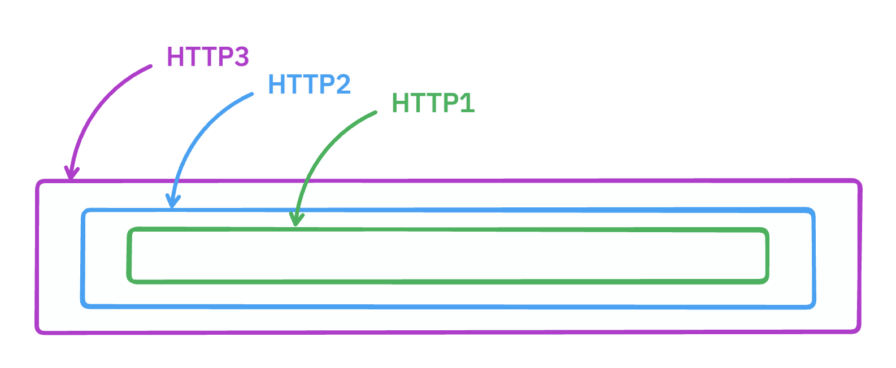

HTTP3, 2, 1
HTTP1 is simple and easy. With enough care you can open a TCP connection and hand-write an HTTP request to a server and get a response. Good fun.
HTTP2 is more complex. Multiple bidirectional requests can be multiplexed over a single connection. You might use it with something like GRPC, or to get web pages to load faster.
HTTP3 is wild stuff. Implemented over UDP instead of TCP. You can open a connection, open streams on that connection, send data with different types of ordering and deliverability guarantees.
I’ve mostly known HTTP3 as a thing that big tech companies use to eek out more efficiency. Recently I was experimenting with HTTP3+Go to do network tunnelling and got exposed to more of its features.
If HTTP3 can do ordered streams then surely we can stream HTTP2 within an HTTP3 connection? And if HTTP2 can do bidirectional streaming over a single connection then surely you can implement HTTP1 over it? Right?

The code is here, and each of these
sections has a corresponding test in
http321_test.go
if you’d like to follow along with greater detail
HTTP3
We can start a listener, connect to it, and open a stream:
listener := NewHTTP3Listener(t) // listen
conn := DialListener(t, listener) // dial the listener
serverConn, _ := listener.Accept(ctx) // accept the dialed connection
stream, _ := conn.OpenStream() // open a stream
serverStream, _ := serverConn.AcceptStream(ctx) // accept the stream
_, _ = stream.Write([]byte("hello")) // write bytes
buf := make([]byte, 5)
_, _ = io.ReadFull(serverStream, buf) // read them
fmt.Println(string(buf)) // => "hello"
The stream we’re opening is reliable, and ordered. Each connection can open many streams. Straightforward enough.
HTTP3+2
In order to make an HTTP2 connection we’re going to need to “dial” the other
server. Normally this would be a net.Dial call and new TCP connection. Here,
we’re going to call conn.OpenStream() and wrap the stream up into a
net.Conn.
func QuicConnDial(conn quic.Connection) (net.Conn, error) {
stream, err := conn.OpenStreamSync(context.Background())
if err != nil {
return nil, err
}
return &ReadWriteConn{Reader: stream, Writer: stream, Closer: stream}, nil
}
ReadWriteConn
takes our stream and wraps it up wth some dummy methods to behave like a
net.Conn.
On the other end we’ll need to implement a
net.Listener. When the listener calls
conn, err := listener.Accept(), instead of accepting a new TCP stream we’re
going to call serverConn.AcceptStream and wrap the returned stream up as a
connection.
func (l *QuicNetListener) Accept() (net.Conn, error) {
stream, err := l.Connection.AcceptStream(context.Background())
if err != nil {
return nil, err
}
return &ReadWriteConn{Reader: stream, Writer: stream, Closer: stream}, nil
}
With those bits, we can string it all together:
listener := NewHTTP3Listener(t)
conn := DialListener(t, listener)
serverConn, _ := listener.Accept(ctx) // Connect HTTP3
netListener := QuicNetListener{Connection: serverConn} // Make the net.Listener
handle := h2c.NewHandler(
http.HandlerFunc(func(w http.ResponseWriter, r *http.Request) {
w.WriteHeader(200)
}), &http2.Server{},
) // Configure our http2 handler
go func() {
for {
conn, err := l.listener.Accept()
if err != nil {
break
}
go (&http2.Server{}).ServeConn(conn, &http2.ServeConnOpts{
Handler: handler,
})
}
}() // Use http2.ServeConn to run the handler over the connection.
client := &http.Client{
Transport: &http2.Transport{
AllowHTTP: true, // Allow unencrypted http2
DialTLSContext: func(ctx context.Context,
network, addr string, cfg *tls.Config) (net.Conn, error) {
return QuicConnDial(conn)
},
},
} // Create an HTTP2 client that uses our QuicConnDial
resp, err := client.Get("http://any.domain")
fmt.Println(resp) // => OK 200 HTTP/2.0
There we have it. HTTP2 within HTTP3.
Here’s a test
that fires of 10 requests to an http2 server that runs
time.Sleep(time.Millisecond * 100). Each request is made over the same
connection and all the requests return in ~100ms total.
HTTP3+2+1
In order to get HTTP1 working, we need to do the same task over again. We need
to implement a dial function and a net.Listener, but this time over a
streaming HTTP2 request. It was tricky to get this working, and my final version
fails in certain situations.
This issue was helpful in
confirming the basic patterns that needed to be set up.
Here’s the net.Listener implementation
func (l *HTTP2OverQuicListener) Accept() (net.Conn, error) {
l.once.Do(func() {
l.conns = make(chan net.Conn, 1)
handler := h2c.NewHandler(http.HandlerFunc(func(w http.ResponseWriter, r *http.Request) {
w.WriteHeader(200)
pReader, pWriter := io.Pipe()
l.conns <- &ReadWriteConn{Reader: r.Body, Writer: pWriter, Closer: r.Body}
_, _ = io.Copy(flushWriter{w}, pReader)
}), &http2.Server{})
go func() {
for {
conn, err := l.listener.Accept()
if err != nil {
break
}
go (&http2.Server{}).ServeConn(conn, &http2.ServeConnOpts{
Handler: handler,
})
}
}()
})
return <-l.conns, nil
}
The first time we call Accept we use a
sync.Once to start an http server. When a new
request comes in we turn the request body and response in to a net.Conn. We
use a pipe, and an io.Copy for this so that the request is held open until the
connection is closed. Note the use of flushWriter to make sure we’re flushing
the response bytes back over the connection.
func HTTP2OverQuicDial(conn quic.Connection) (net.Conn, error) {
client := &http.Client{
Transport: &http2.Transport{
AllowHTTP: true,
DialTLS: func(network, addr string, cfg *tls.Config) (net.Conn, error) {
return QuicConnDial(conn)
},
},
}
inReader, inWriter := io.Pipe()
outReader, outWriter := io.Pipe()
req, err := http.NewRequest(http.MethodPost, "http://any.domain", io.NopCloser(inReader))
if err != nil {
return nil, err
}
go func() {
resp, _ := client.Do(req)
_, _ = io.Copy(outWriter, resp.Body)
}()
return &ReadWriteConn{Reader: outReader, Writer: inWriter, Closer: outReader}, nil
}
Dial is similar. Open an http2 request and start copying the bytes into a connection.
With those complete, we can string together our network request.
listener := NewHTTP3Listener(t)
conn := DialListener(t, listener)
serverConn, _ := listener.Accept(ctx) // Connect HTTP3
netListener := QuicNetListener{Connection: serverConn} // Listener
http2Listener := HTTP2OverQuicListener{listener: &netListener} // Listener over HTTP2
go func() {
_ = http.Serve(&http2Listener, http.HandlerFunc(func(w http.ResponseWriter, r *http.Request) {
fmt.Fprintf(w, "I'm http1! 🐢🐢🐢")
}))
}() // Run our HTTP server.
client := &http.Client{
Transport: &http.Transport{
Dial: func(network, addr string) (net.Conn, error) {
return HTTP2OverQuicDial(conn)
},
},
}
resp, err := client.Get("http://any.domain")
fmt.Println(resp) // => OK 200 HTTP/1.1
Woo! 🎉
Fun? Useful? Maybe.
I did try to get websockets working over the HTTP1 handler, but it was unhappy
with my very fake net.Conn. Until next time, happy tunneling!